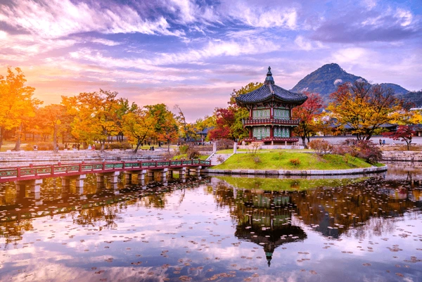
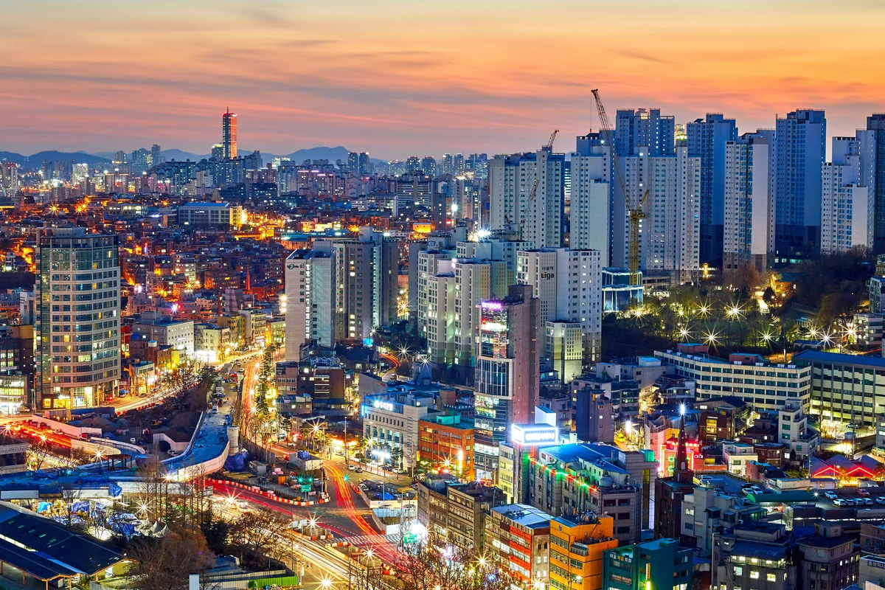

Dél-Korea - Főoldal 🌸
Kedves Látogató!
Üdvözöllek a weboldalamon, amely Dél-Korea lenyűgöző világát mutatja be neked! Ismerd meg ezt a különleges országot, és fedezd fel hagyományait, népi hitvilágát, ételeit és popkultúráját!
Készen állsz, hogy belemerülj Korea varázslatos történeteibe és kultúrájába? Lépj tovább, és indulj egy felejthetetlen utazásra!
Rövid ismertető
A Koreai Köztársaság, hétköznapi nevén Dél-Korea, Kelet-Ázsiában található, a Koreai-félsziget déli részén. Egyetlen szárazföldi határa a koreai demilitarizált övezet, amely Észak-Koreával közös. A két Korea 1945. augusztus 15-éig egy államot alkotott. Keleten a Japán-tenger (hivatalos koreai nevén Keleti-tenger), délen a Koreai-szoros és nyugaton a Sárga-tenger határolja.

A nagy történelmi múltra visszatekintő Dél-Korea ma a világ egyik vezető gazdasági hatalma, számos nemzetközi szövetség tagja. Fővárosa és legnagyobb városa a 2018-ban 9,67 millió lakosú[5] Szöul, a világ egyik legnagyobb városa. A fővároson kívül még kilenc milliós népességű nagyváros található az országban.
